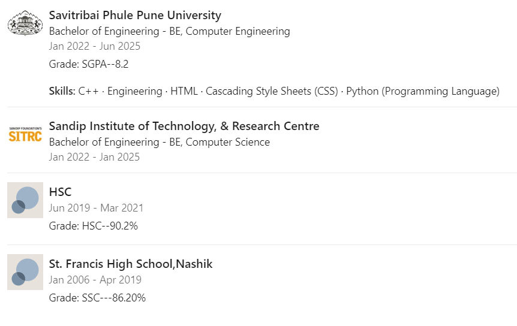
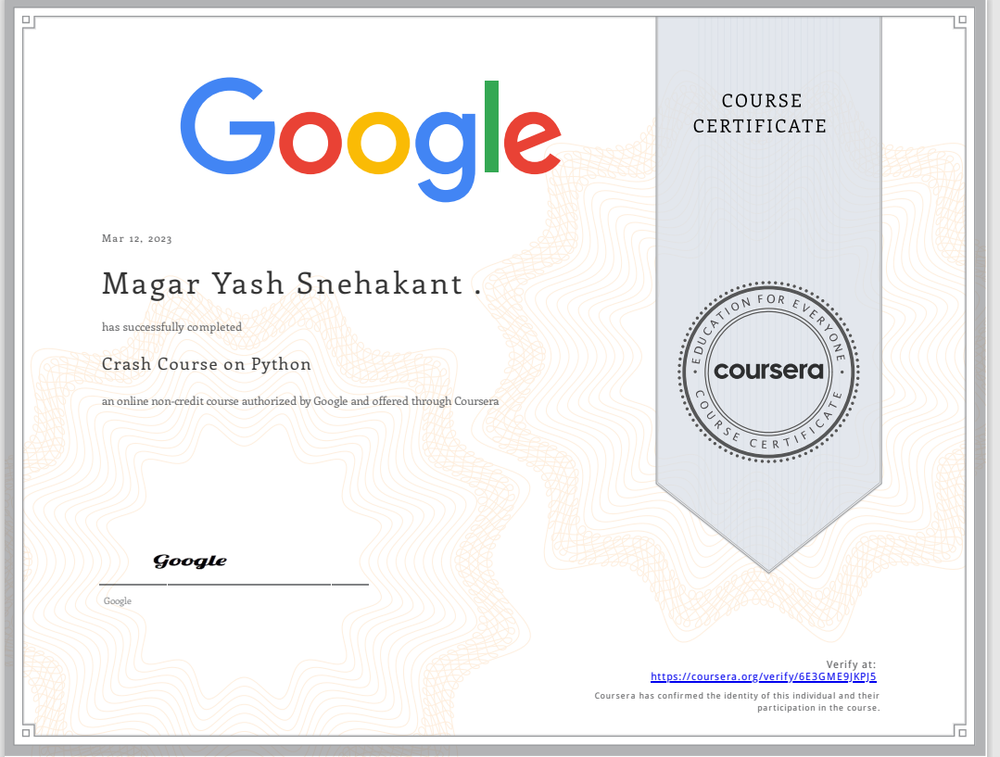

Myself Yash Snehakant magar
I am a second-year computer engineering student, seeking opportunities to expand my knowledge and skills in the field of technology. My coursework has provided me with the foundational knowledge in programming languages such as Java, Python and C++, as well as experience in software development.
Furthermore, I have demonstrated strong problem-solving skills through various individual and team projects. I am excited to continue exploring the latest advancements in technology and applying my skills to real-world scenarios.
Outside of my academic pursuits, I am actively involved in extracurricular activities such as hackathons and coding competitions. These experiences have honed my ability to work collaboratively in a fast-paced environment and have given me exposure to emerging technologies.
I am constantly seeking new challenges and opportunities to further develop my skills in computer engineering. I am open to internships and co-op programs related to software engineering, data analytics or any other relevant fields. Feel free to reach out to me for any potential opportunities or collaborations
My Education Details:

My Certifications:


- 
MylinkedIn Profile:Link
Contact info:
+918805411429
Nashik,Maharashtra-422009